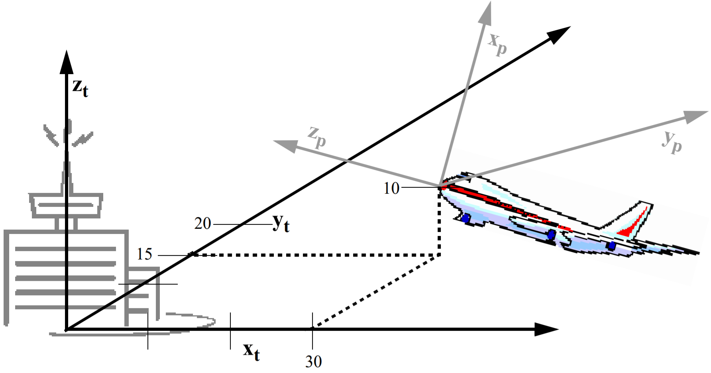
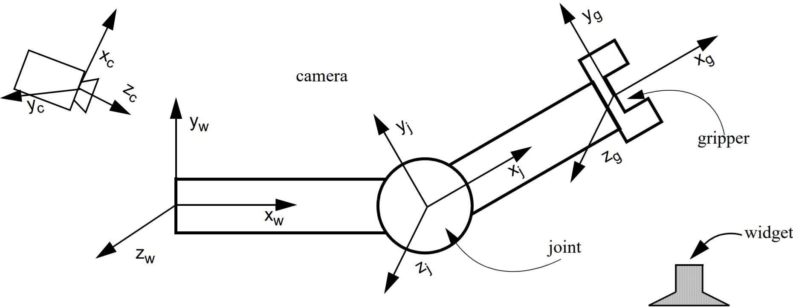
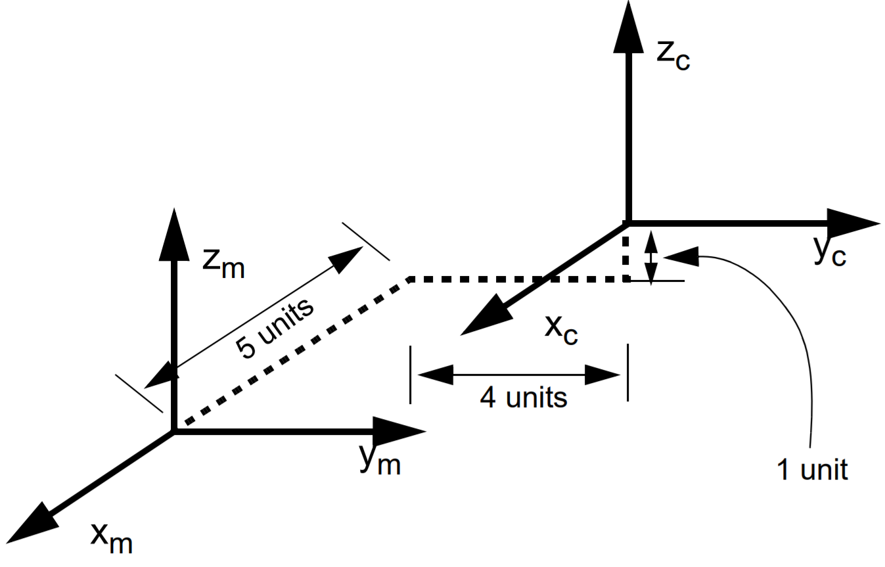
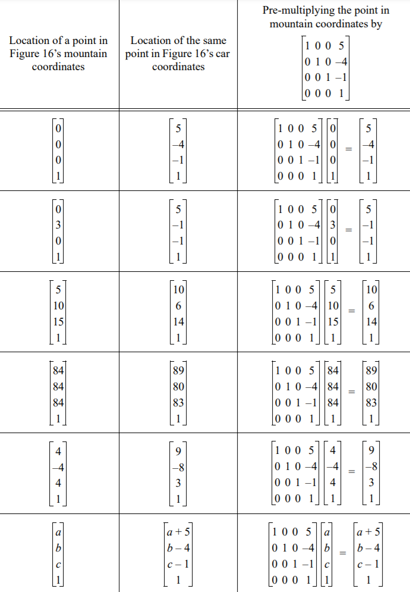
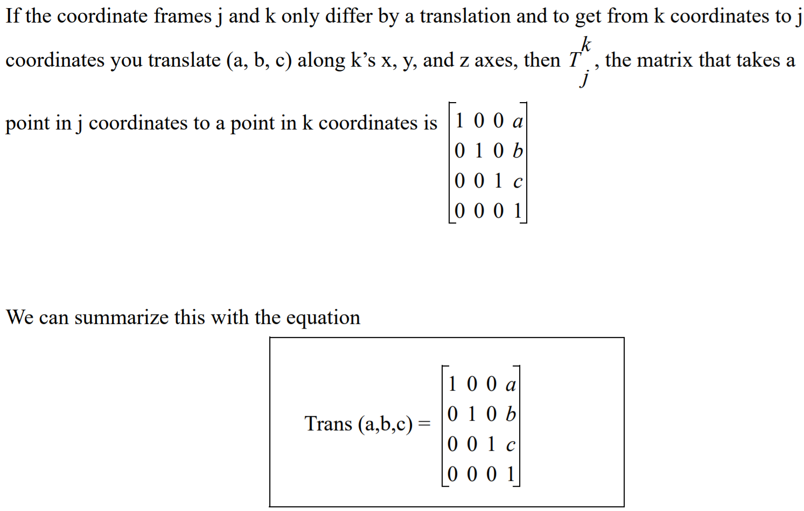
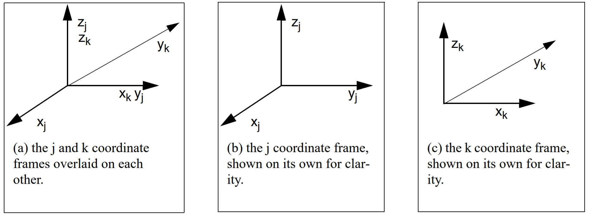
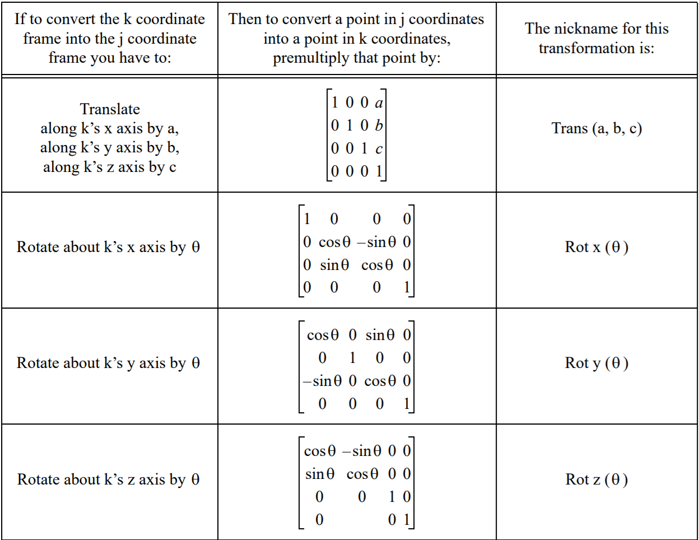
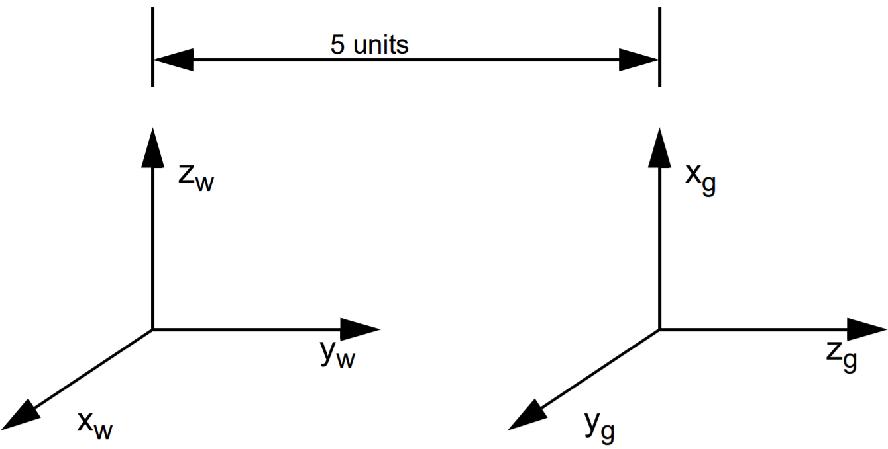

Forward Kinematics
1. Homogeneous Transform
1.1 Representing Points
The point (x,y,z) is represented as the vector
Figure 1. When the plane takes-off, its nose is still at location (0,0,0) in plane coordinates, but it is at a different location in tower coordinates. To determine where it is in tower coordinates, the tower’s x and y axes have been extended, and the nose of the plane has been plotted in the manner of Figure 10. Thus we see that the nose of the plane is at location (30, 15, 10) in tower coordinates.
The plane is at location (30, 15, 10) in tower coordinates. We will normally represent that location as
In order to save space in this document, we will often write the point
1.2 The Use of Multiple Coordinate Frames in Robotics
It is very common in robotics to use two or more coordinate frames to solve a problem. Suppose the airplane in Figure 11 were automatically controlled. It would be very useful to keep track of some things in tower coordinates. For example, the altitude of the plane is simply the z coordinate of its location in tower coordinates. It also would be useful to keep track of other things in airplane coordinates. For example, the direction the plane should head to in order to avoid a mountain. Indeed, for many mobile robot applications, it is desirable to know the locations of objects in both “world coordinates” and “robot coordinates.”
Multiple coordinate frames are also useful in traditional static robots. For example, consider the simple robot arm depicted in Figure 2. If we want to have the gripper pick up a widget off of a table, then we need to figure out the widget’s location. Perhaps we have a camera that we use to initially determine the location of the widget (in camera coordinates). We might need to transform that location into world coordinates to evaluate if it is accessible to the robot at all, and to gripper coordinates to determine when we should close the jaws of the gripper
 Figure 2. A very simple robot arm with one joint and one gripper. The world, camera, joint, and gripper coordinate frames are indicated.
1.3 Transforming Points Between Coordinate Frames
Suppose that you know the location of a point in one coordinate frame (for example, airplane coordinates) and you want to know its location in another frame (for example, tower coordinates). How do you do it? We will start with a very simple case, and then move into more complex examples.
Let’s begin by considering the two coordinate systems in Figure 3, world coordinates and robot coordinates. Notice that the only difference between the two coordinate frames is that the robot frame has been translated by 3 units along the y axis from the world coordinate frame.
Figure 4 is a table of some sample points in world coordinates, and their corresponding values in robot coordinates. For the moment, ignore the third column of Figure 4, and just look at the first two columns. Notice that any point Figure 3. Two coordinate frames, world (w) and robot (r). The origin of the robot frame
is located at the point (0,3,0) in world coordinates. Using our new notation, we can represent this as
Figure 3. Two coordinate frames, world (w) and robot (r). The origin of the robot frame
is located at the point (0,3,0) in world coordinates. Using our new notation, we can represent this as We have seen that one way to convert world coordinates to robot coordinates for the system in Figure 3 is to subtract 3 from the y value in world coordinates. Surprisingly, another way to convert points from the world coordinate frame of Figure
14 to the robot coordinate frame of Figure 3 is to pre-multiply the point by the matrix . The third column of Figure 15 does exactly this and results in the same answer!
It should be clear that there is nothing magic about the number -3 in our 4x4 matrix other than the fact that we moved 3 units along the y axis between the two frames. Indeed, if we had moved 63 units, then pre-multiplying by the matrix would convert points from world coordinates to robot coordinates.

Figure 4. Converting between world and robot coordinates as depicted in Figure 3
Similarly, there’s nothing magic about the fact that we did this move along the y axis. We could come up with similar matrices for changes in frames that occurred along the y or z axis. Or indeed any combination of moves along all three matrices.
Suppose that to get from the coordinate frame p to the coordinate frame q you need to move a units along p’s x axis, b units along p’s y axis, and c units along p’s z axis. Then to take a point from q coordinates to p coordinates, you need
to premultiply it by the matrix For example, consider the two coordinate frames of Figure 5. To transform the robot coordinate frame into the world coordinate frame, you need to translate 5 units along the robot’s x axis, -4 units along the robot’s y axis, and -1 unit
along the robot’s z axis. Thus to take a point in world coordinates and transform that into a point in robot coordinates, you need to premultiply that point by the matrix
. Some examples of this can be found in Figure 6.

Figure 5. Two coordinate frames that differ by only a translation. To get from car coordinates (c) to mountain coordinates (m) you must translate 5 units along the car’s x axis, -4 units along the car’s y axis, and -1 unit along the car’s z axis.
We call the matrix that converts a point from j coordinates to k coordinates the homogeneous transformation from j coordinates to k coordinates, and we abbreviate this as Tkj. Figure 7 summarizes how to compute the matrix that converts between two frames that only differ by a translation

Figure 6. Converting points from the mountain coordinate frame of Figure 5 to the car coordinate frame of Figure 5.
 Figure 7. Converting points between coordinate frames that only differ by a translation.
1.4 Coordinate Frames that Differ by a Rotation Around One Axis
Consider the two frames depicted in Figure 8. To transform the k coordinate frame into the j coordinate frame, we perform a rotation about k’s z axis by -90o . By looking at Figure 8 (a), we can see that xk = yj , zk = zj , and xj = -1*yk. Let’s look at a few examples. The origin of the j axis in j coordinates: the point Figure 8. Two coordinate frames, j and k, that differ only by a rotation about the z axis. To transform the k coordinate frame into the j coordinate frame, we rotate by -90o about k’s z axis.
In our example, is 90o. cos -90o = 0. sin -90o = -1. So our matrix becomes
. When we compute our matrix *
we get
as expected. When we multiply our matrix *
,
we get
as expected.
At this point we know that we can design a matrix to convert points between two coordinate frames that only differ by a translation, or by a rotation about the z axis. It should not surprise you to learn that you can also design matrices to convert points between two coordinate frames that only differ by a rotation about the x or y axis too.
1.5 Putting it All Together
So far we have learned how to create the matrix that will compute the coordinates of a point in one coordinate frame given the coordinates of that point in another coordinate frame subject to the following condition: the two frames may only differ by a translation (along the 3 axes), or by a rotation about one axis. It is indeed possible to convert points between two coordinate frames that differ, perhaps by two translations, or by a rotation then a translation and then another rotation.
 Figure 9. Summary of transformation matrices
The key to understanding how to do this is to understand that there are two ways to view any sequence of translations and rotations. The first way we will call “moving” coordinate systems. In moving coordinate systems, each step happens relative to the steps that have come before it. For example, Figure 10 shows the world and gripper coordinate frames for a particular robotic system. Note that not only is the gripper coordinate frame translated from the world coordinate frame, but there also must be some sort of rotation that caused the gripper’s x axis to point up instead of out of the page towards you as the world coordinates do.
In the “moving axes” approach, we say that to get from world coordinates to gripper coordinates, you need to do the following sequence of moves: Rotate about xw by -90 degrees. Call this new frame intermediate frame 1, and we’ll call its axes x 1, y1, and z1. Next rotate about the new z1 by -90 degrees. Call this new frame intermediate frame 2, and we’ll call its axes x2, y2, and z2. Finally, translate by (0,0,5) relative to intermediate frame 2. This results in the gripper coordinate frame.
The alternative approach is the “fixed axes” approach. In this technique, all of your moves are relative to the original world coordinate frame. In the “fixed axes” approach, the picture is still as depicted in Figure 10, but this time the sequence of steps is: Rot xw(-90) then Rot yw (-90), then Trans(0,5,0) relative to world coordinates. Whether you choose to use the “moving axes” approach or the “fixed axes” approach, your final matrix will be the same. However the way you compute it will differ1.6 Computing the Transformation Matrix Using Moving Axes

Figure 10. World and gripper coordinate frames for some robot. There are several ways we can think about transforming between the two coordinate frames.
Recall that the moving axes approach is as follows: to get from world coordinates to gripper coordinates, you need to do the following sequence of moves: Rotate about xw by -90 degrees. Call this new frame intermediate frame 1, and we’ll call its axes x1, y1, and z1. Next rotate about the new z1 by -90 degrees. Call this new frame intermediate frame 2, and we’ll call its axes x2, y2, and z2. Finally, translate by (0,0,5) relative to intermediate frame 2. This results in the gripper coordinate frame.
When we use “moving axes” we list the moves that we did from left to right, compute the individual matrices for each part, and then multiply them together. For example, in this situation, our sequence of equations is:
Rot x(-90) * Rot z(-90) * Trans(0,0,5)The matrices for this product are as follows:
1.7 Using Fixed Axes
Recall that the fixed axes approach does everything relative to the original world coordinate frame. The sequence of transformations in this case was as follows: Rot xw(-90) then Rot yw (-90), then Trans(0,5,0) relative to world coordinates.
When we using “fixed axes” computation, (i.e. each new rotation is relative to the original gripper coordinate frame), we write the equations from right to left.
Trans (0,5,0) * Rot y (-90) * Rot x(-90)
The matrices for this product are as follows:
Check it out! this is the same equation we got when we did the computation using moving axes! (Phew!)
 Previous
Previous